残業・有休取得の状況を確認する
［有休管理］メニューでは、従業員の1年間の「残業時間」と「有休取得日数/時間」を月毎に集計したデータを一覧で確認できます。データはエクセルファイルとしてダウンロードすることもできます。
休暇の付与方法については、「休暇の付与」を参照してください。
ご注意 |
有給取得・残業の状況を確認できるのは、課長級アカウント、人事担当者アカウント、システム管理者アカウントです。 |
|---|
 勤怠RECO［管理用］操作マニュアル
勤怠RECO［管理用］操作マニュアル
勤怠RECO［管理用］
操作マニュアル
［有休管理］メニューでは、従業員の1年間の「残業時間」と「有休取得日数/時間」を月毎に集計したデータを一覧で確認できます。データはエクセルファイルとしてダウンロードすることもできます。
休暇の付与方法については、「休暇の付与」を参照してください。
ご注意 |
有給取得・残業の状況を確認できるのは、課長級アカウント、人事担当者アカウント、システム管理者アカウントです。 |
|---|
［有休管理］をクリックし、［各課有休・残業一覧表］をクリックする
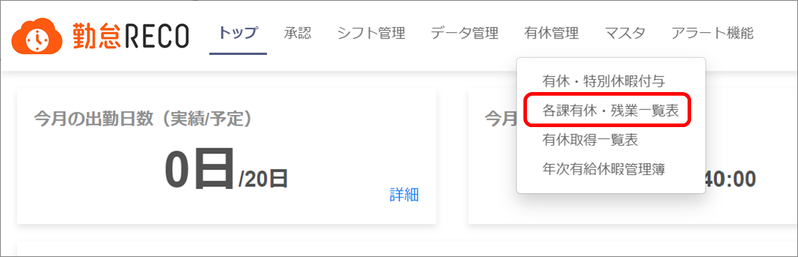
各課有休・残業一覧表画面が表示されます。
「年度」に、一覧表示する有休取得・残業の年度を入力する
「年度」の入力は必須です。年度の期間は共通マスタの設定に従います。
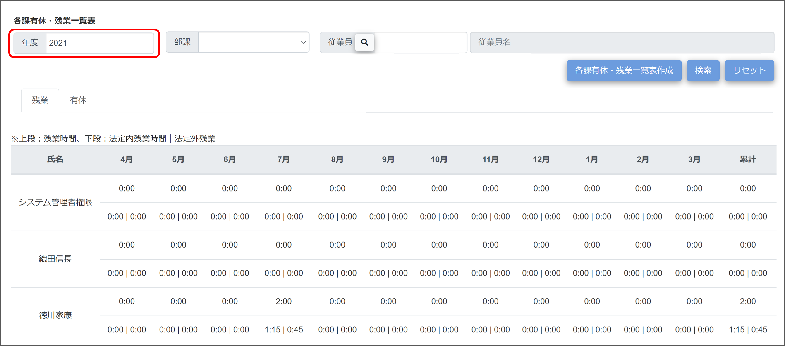
必要に応じて「部課」または「従業員」を設定する
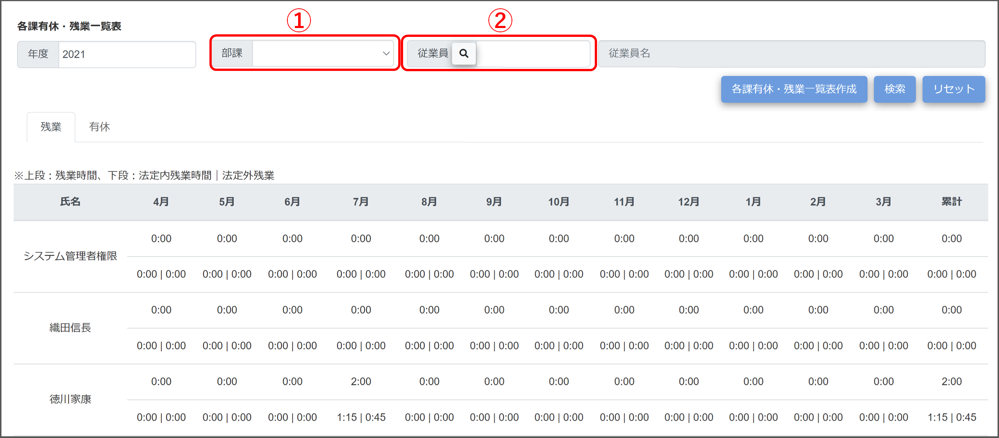
部課
対象者を部課で絞り込む場合に、ドロップダウンリストから部課を選択します。
従業員
対象者を従業員コードで絞り込む場合に、従業員コードを入力します。のボタンをクリックすると、従業員コードのリストが表示されます。○をクリックして選択してください。
ヒント |
検索を実行すると、設定した検索条件が記憶されます。［リセット］ボタンをクリックすると、設定した検索条件をすべてリセットできます。 |
|---|
［検索］ボタンをクリックする
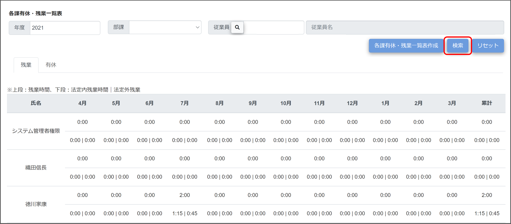
検索条件に該当する従業員の残業と有休取得状況が2つのタブに分かれて表示されます。
［共通マスタ］メニューで「法定内・法定外残業計算」を「使用しない」にした場合、残業時間のみが表示され、下段の「法定内残業時間｜法定外残業」は表示されません。
残業と有休取得状況を確認する
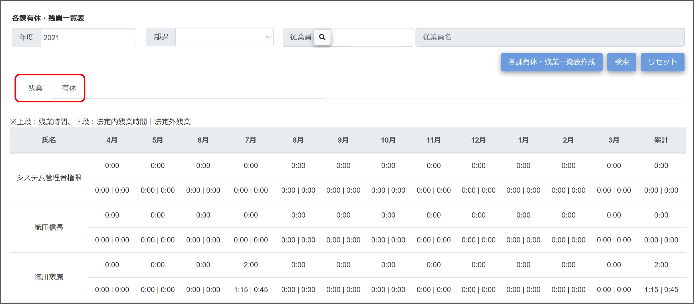
［残業］タブ／［有休］タブで表示を切り替えて確認します。
［各課有休・残業一覧表作成］ボタンをクリックする
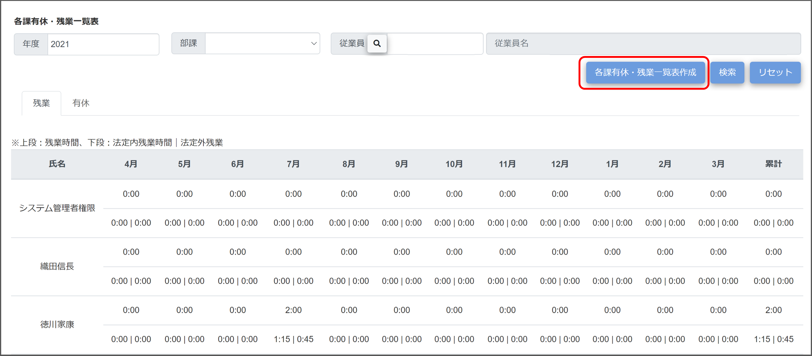
有休取得と残業を月毎に集計したエクセルファイルがダウンロードされます。
「有休取得一覧表」と「残業一覧表」はエクセルファイルのシートで分かれています。
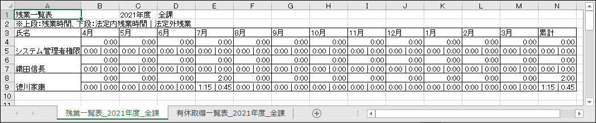
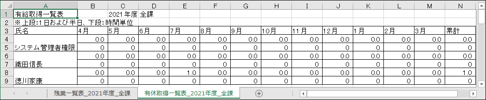
各従業員の「有給取得日と取得した有休区分（時間休の場合は取得時間）を一覧にしたエクセルファイル」をダウンロードできます。
ご注意 |
有休取得一覧表をダウンロードできるのは、人事担当者アカウントとシステム管理者アカウントです。 休取得一覧表に出力されるのは勤怠承認済データです。未承認の有休は出力されません。 |
|---|
［有休管理］をクリックし、［有休取得一覧表］をクリックする
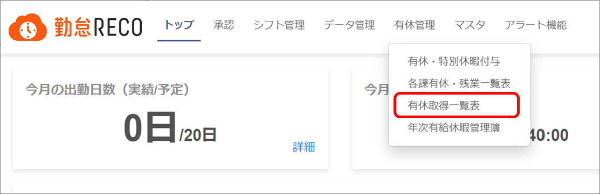
有休取得一覧表画面が表示されます。
「期間」に、一覧表を作成する有休取得期間を入力する
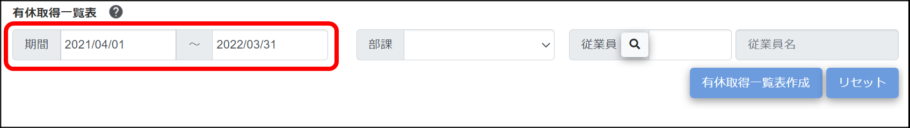
カレンダーから選択します。
必要に応じて「部課」または「従業員」を設定する
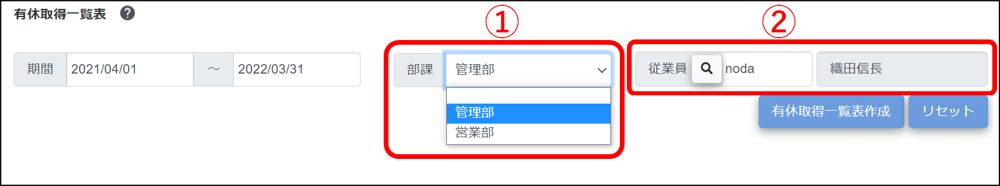
部課
対象者を部課で絞り込む場合に、ドロップダウンリストから部課を選択します。
従業員
対象者を従業員コードで絞り込む場合に、従業員コードを入力します。のボタンをクリックすると、従業員コードのリストが表示されます。○をクリックして選択してください。
ヒント |
検索を実行すると、設定した検索条件が記憶されます。［リセット］ボタンをクリックすると、設定した検索条件をすべてリセットできます。 |
|---|
［有休取得一覧表作成］ボタンをクリックする
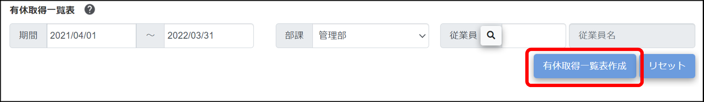
有休取得年月日毎の詳細情報が整理されたエクセルファイルがダウンロードされます。
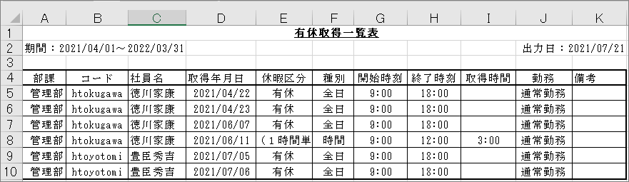
年次有給休暇管理簿をダウンロードします。
ファイルには基準日・付与日・取得日数（合計）が表示されます。
ご注意 |
年次有給取得管理簿を出力できるのは、人事担当者アカウントとシステム管理者アカウントです。 |
|---|
［有休管理］をクリックし、［年次有給休暇管理簿］をクリックする
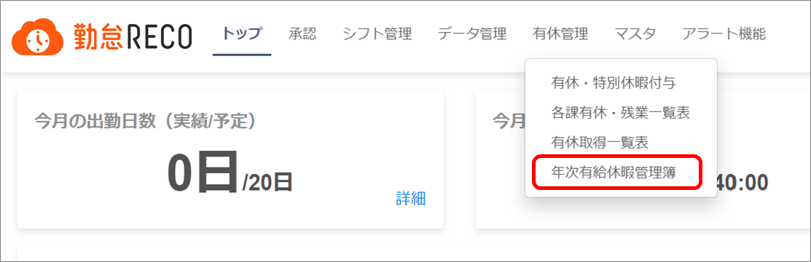
年次有給休暇管理簿画面が表示されます。
「年度」を指定する
「年度」の入力は必須です。年度の期間は共通マスタの設定に従います。
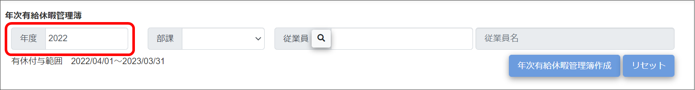
必要に応じて「部課」または「従業員」を設定する
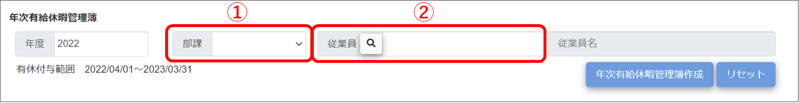
部課
対象者を部課で絞り込む場合に、ドロップダウンリストから部課を選択します。
従業員
対象者を従業員コードで絞り込む場合に、従業員コードを入力します。のボタンをクリックすると、従業員コードのリストが表示されます。○をクリックして選択してください。
ヒント |
検索を実行すると、設定した検索条件が記憶されます。［リセット］ボタンをクリックすると、設定した検索条件をすべてリセットできます。 |
|---|
［年次有給休暇管理簿作成］ボタンをクリックする
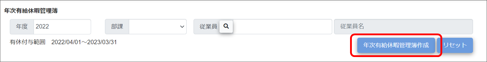
基準日・付与日・取得日数（合計）が表示されたエクセルファイルがダウンロードされます。
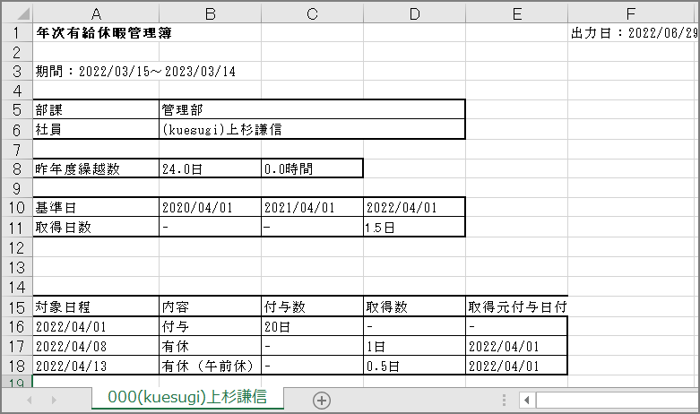